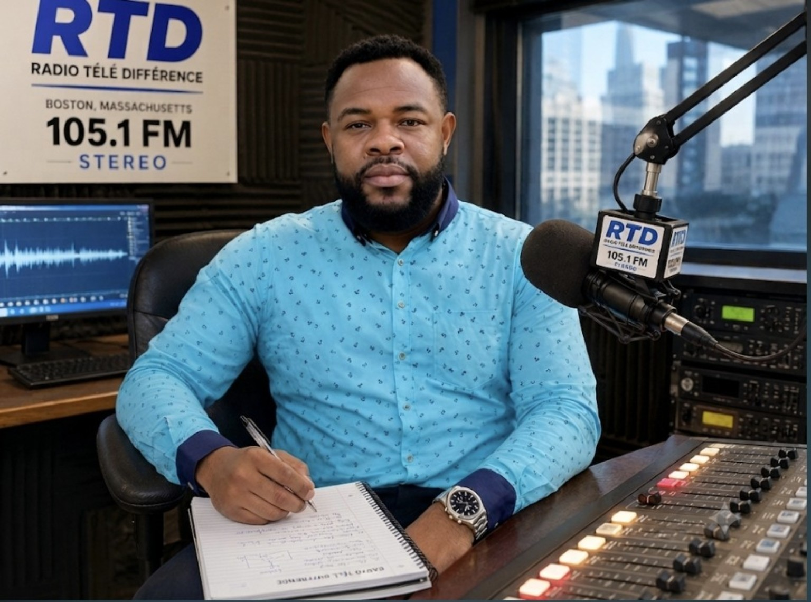

01
Musiques & culture
Le rythme de nos racines.
Des sonorités haïtiennes et caribéennes, un patrimoine à partager.
VOTRE RADIO. VOTRE CULTURE.
Depuis Boston, le cœur d’Haïti et des Caraïbes résonne avec vous. Une radio pour nous retrouver, nous raconter et nous rassembler.
Une voix, une communauté, une même culture.
L’UNIVERS RTD
Des voix, des histoires et des talents d’ici et d’ailleurs. Découvrez les thèmes qui nous rassemblent.
Musiques & culture
Des sonorités haïtiennes et caribéennes, un patrimoine à partager.
Voix de la diaspora
Des histoires et des regards qui rapprochent la communauté.
Rencontres & échanges
Une place pour les initiatives, les idées et les talents de notre communauté.
Les horaires et les rendez-vous seront annoncés ici par RTD. En attendant, retrouvez la radio en ligne.
NOTRE CULTURE N’A PAS DE FRONTIÈRES
À Boston comme à travers les États-Unis, RTD accompagne la communauté haïtienne et caribéenne. Notre lien : une culture vivante, des histoires communes et l’envie de rester proches.
Faites entendre votre voix
NOTRE MISSION
Fondée par Saint Jules Philippe, Radio Télé Différence se veut un pont entre Haïti, les Caraïbes et la diaspora. Depuis Boston, nous donnons une place aux voix, aux histoires et aux talents de notre communauté.
01Relier les générations et les territoires
02Faire vivre notre culture et nos langues
03Donner de la place aux talents de chez nous
LE CARNET DE RTD
Initiative locale, événement culturel ou parcours inspirant : partagez votre sujet avec notre équipe. Les prochaines publications de RTD apparaîtront ici.
Écrire à RTDRESTONS EN LIEN
Une question, une proposition d’émission, un partenariat ou une histoire à partager ? Contactez Radio Télé Différence.